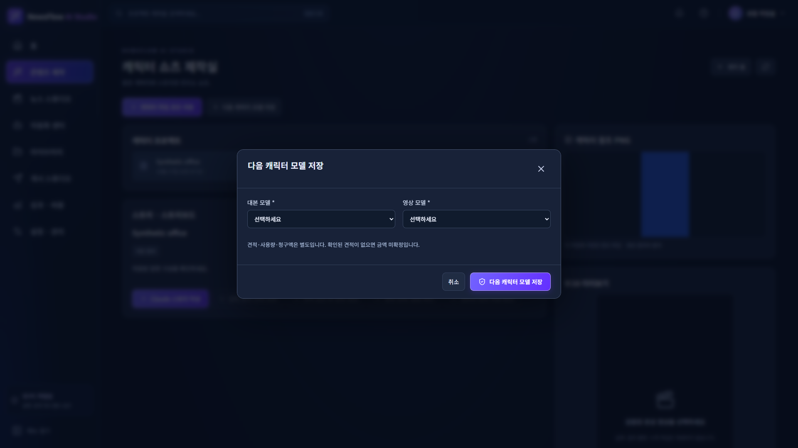
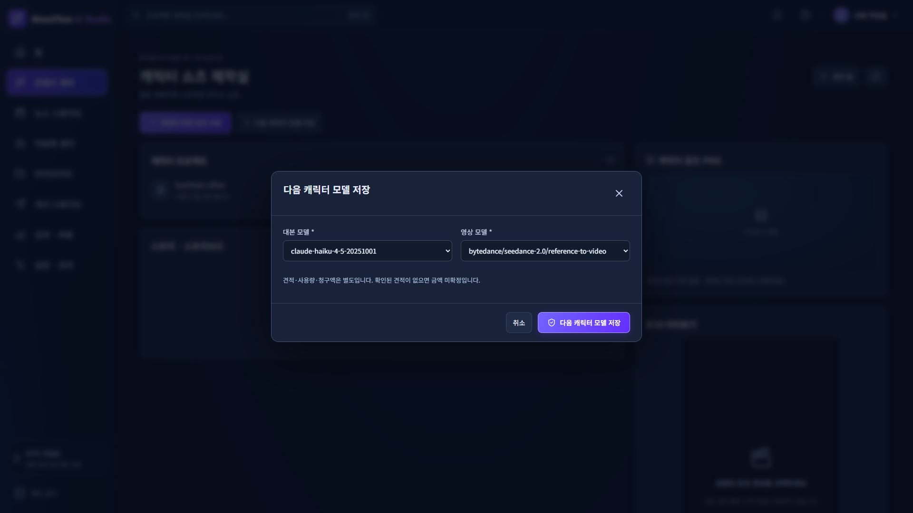
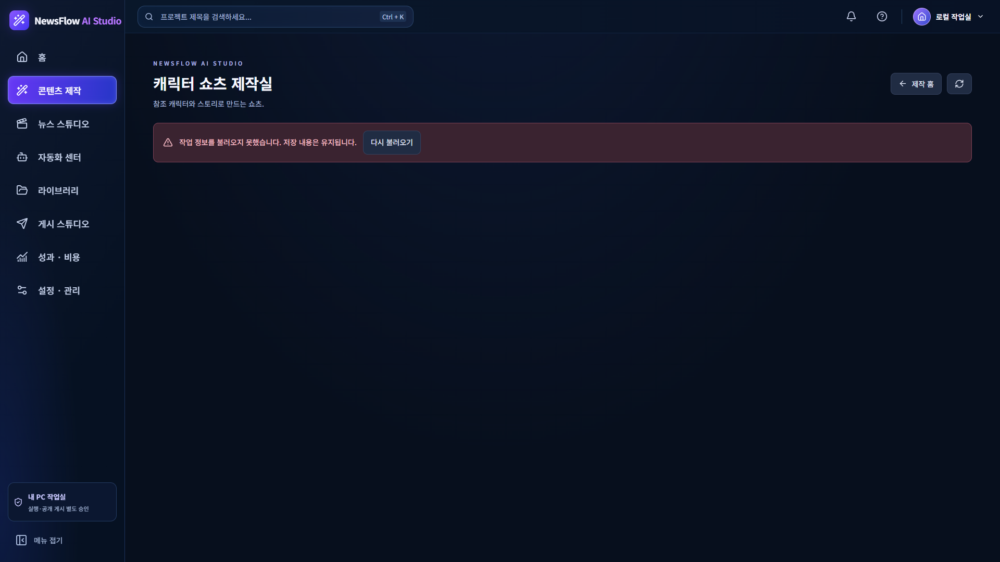
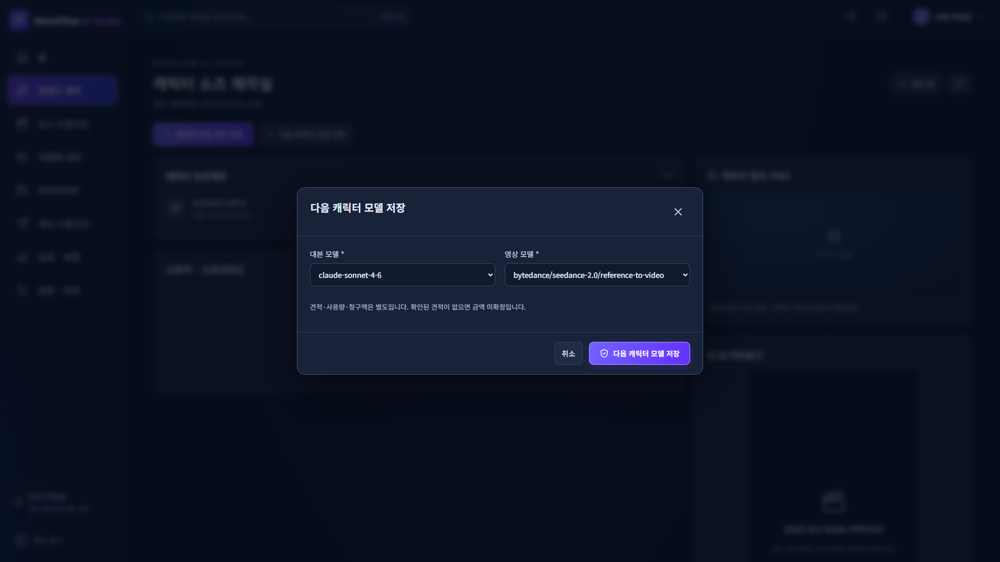
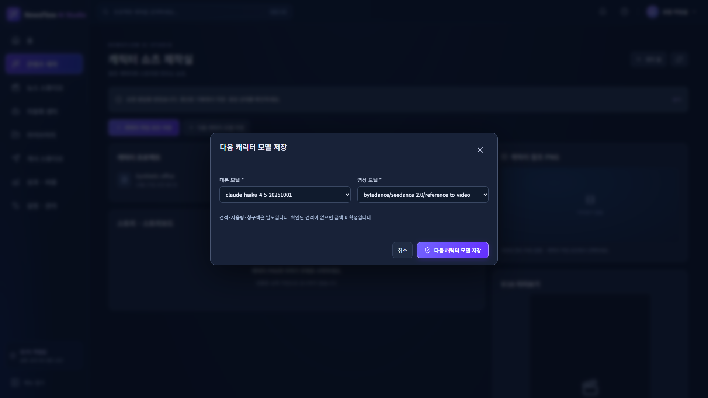
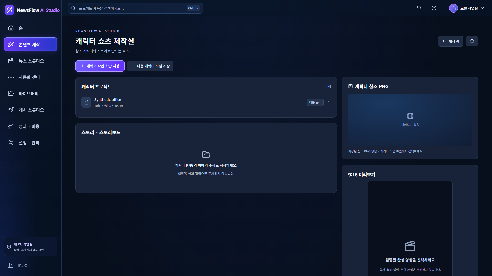
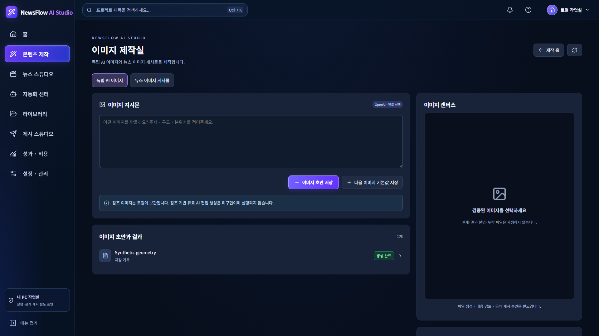
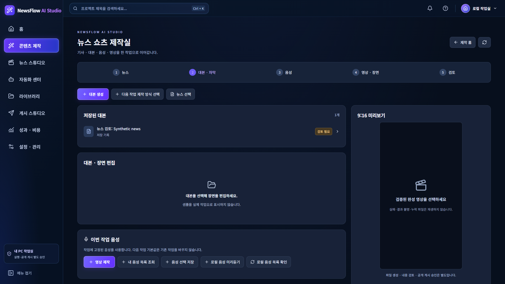
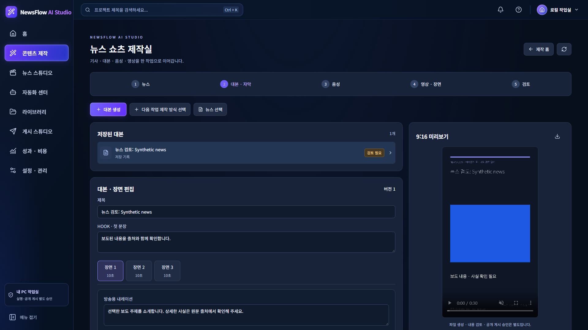

새 EXE 집중 검증 15 PASS / 0 FAIL / 0 ERROR. Windows Actions 42 PASS. 운영 8765와 DB·키·백업 보존.
전체 한국어 보고 · 제품 diff · Windows Actions · 운영 보존


| Initial form restores saved model IDs and matching Select options | PASS |
| Save new Claude model, close and reopen displays saved values | PASS |
| Cancel discards unsaved selection and reopening preserves saved values | PASS |
| Existing job selection and independent news/image defaults unchanged | PASS |
| Missing keys do not clear locally stored model choice | PASS |
| Delayed model catalog loads before form initialization | PASS |
| Failed model catalog shows explicit error and recovery preserves selection | PASS |
| News, image and character EXE routes and React assets load | PASS |
| New bundle displays generated Fake image file | PASS |
| New bundle plays FFmpeg synthetic vertical MP4 | PASS |
| No React exceptions or external page requests | PASS |
| Saved model IDs and job snapshot persist across actual EXE restart | PASS |
| Reopened form displays both saved models after EXE restart | PASS |
| Other mode defaults remain unchanged after EXE restart | PASS |
| No React exceptions or external page requests | PASS |







NewsFlow AI — 캐릭터 모델 선택값 표시 수정 및 EXE 재검증 2026-10-27 / 승인 범위 최종 판정: PASS 실제 API·운영 적용·일반 사용자 배포 인수와는 별개입니다. 1. 직접 원인 및 최소 수정 저장된 모델 ID와 Select 옵션 값은 일치했고 저장 데이터는 정상이었습니다. 모델 목록 비동기 로딩 문제도 아니었습니다. CommandDialog.initial()이 character_create(새 작업)에만 catalog.characterDefaults를 주입하고 character_character_defaults(기본값 수정 창)는 제외했습니다. 기본값 수정 창의 script_model/video_model은 Form 기본값이 없어 빈 문자열로 초기화됐습니다. 수정은 같은 기본값 주입 조건에 character_character_defaults를 추가한 UI 조건 1곳입니다. context가 마지막에 적용되는 기존 우선순위는 유지합니다. 저장 데이터·모델 ID·Provider 구분·API 계약·DB schema·migration·비용/승인 정책 변경 0. 기존 디자인/CSS 변경 0. 기존 작업 snapshot을 다시 쓰지 않습니다. 2. 변경 파일·diff·GitHub 제품: frontend/src/studio/CommandDialog.tsx (4줄 추가 / 1줄 삭제). 정확한 제품 diff는 product-fix.diff에 포함. 테스트: frontend/tests/character-model-exe.cjs (합성 EXE 전용 집중 검사). 제품·테스트 커밋: 476d14ad844ec3c636b1250b389f6da97f817617. 브랜치: codex/newsflow-studio-v3-20261026. 보고·안전한 JSON 증거·합성 캡처는 별도 보고 커밋으로 보존합니다. 기존 4개 미커밋 파일의 줄바꿈 차이는 그대로 보존하고 스테이징하지 않았습니다. PR #35는 open / Draft / 미병합 유지. 기존 PR head codex/newsflow-ux-video-app / 6aef983과 React 개발 브랜치를 구분합니다. main·운영 브랜치·PR #35 변경 없음. 3. Windows Python 3.14.7 실제 EXE 집중 검증: 15 PASS / 0 FAIL / 0 ERROR 재시작 전 11 PASS: - 최초 진입: 저장된 대본·영상 모델 표시 및 각 ID에 정확히 일치하는 Select 옵션 확인. - 합성 기본값 claude-sonnet-4-6 → claude-haiku-4-5-20251001 변경·저장·닫기·재열기 PASS. - Seedance bytedance/seedance-2.0/reference-to-video 표시·보존. - 미저장 변경 후 취소 → 재열기에서 마지막 저장값 복원. 취소가 저장으로 처리되지 않음. - 기존 작업의 claude-opus-4-6 및 전체 selection, 뉴스·이미지 기본값 불변. - Claude/Higgsfield 키 미등록·인증 미검증 상태에서도 로컬 모델 선택값 유지. 실제 키 입력·조회·복호화 없음. - 모델 카탈로그를 포함한 실제 작업 JSON 응답 지연 시 로딩 중 잘못된 폼을 열지 않고, 응답 후 저장값 표시. - 합성 HTTP 503 시 오류·다시 불러오기 표시, 복구 후 저장값 유지. 다른 기본값으로 자동 대체하지 않음. - 뉴스·이미지·캐릭터 실제 React 화면 이동과 자산 로딩, Fake 생성 이미지 파일 표시, 합성 1080×1920·30초 MP4 재생 및 시간 진행 확인. - React 예외 0, 관찰한 외부 페이지 요청 0. 재시작 후 4 PASS: - EXE 정상 종료 후 동일 합성 프로필로 새 프로세스 실행. - 저장된 모델 ID·기존 작업 selection 보존, 실제 설정 창의 두 Select 표시, 다른 제작 모드 기본값 불변. - React 예외·외부 페이지 요청 0. 이전 실패 1건은 위 실제 재현에서 PASS 전환. 이전의 관련 없는 13 PASS 증거는 재사용했습니다. 4. 새 EXE·자산·합성 엔진 기존 PyInstaller 6.22.3 onedir 기술 설정 / Windows Python 3.14.7만 사용. 파일: NewsFlowAI-Technical.exe. 로컬 위치는 별도 로컬 artifact-location-private.txt 및 사용자 응답 파일 링크로 제공. SHA-256: b72452f5027e77155b21943edf2457de4d38b30c7479ec3afd6d315be831434b. 최신 React 자산 17개가 frontend/dist와 모두 해시 일치. 번들 내 운영 DB·DPAPI 파일·사용자 MP4 0. 새 EXE의 기존 기술 Probe PASS: Fake RSS·로컬 분석/대본·FakeTTS·FFmpeg 뉴스 MP4 1080×1920·30초, 자동 이미지 연결, 독립 이미지 Fake 생성 1회·검토 후 소재 저장, 캐릭터 테스트 패턴 클립 합성 1080×1920·30초. 실제 Claude 스토리·OpenAI 이미지·ElevenLabs 음성·Higgsfield/Seedance 생성, OAuth·SNS 게시 0. 자식 EXE PATH는 System32만 사용했습니다. Python 미설치 새 PC·설치 프로그램·일반 배포는 미검증이며 이번 범위 밖입니다. 5. 정상 종료·재실행·정리 중복 인스턴스/포트 충돌 안전 거부. CTRL_BREAK 후 15초 이내 server_stop 기록 및 정상 exit 0. 단순 타임아웃 상향·강제 종료로 PASS 처리하지 않았습니다. 재시작 전후 대본·음성·이미지·캐릭터 기본값과 기존 캐릭터 selection 5개 그룹 완전 일치. 최종 Windows Job active=0, 테스트 18765 리스너=0, 해당 Chrome·Node·EXE 잔존 프로세스=0. 6. React·Windows Actions·회귀 구분 이번 로컬 React 타입 검사·Vite 빌드 PASS. 기존 폰트 런타임 경로·Lucide directive 경고는 유지되며 새 EXE에서 실제 자산 로딩 확인. 이번 새 EXE 브라우저 집중: 15 PASS / 0 FAIL / 0 ERROR. Windows Actions 40419060240 / 코드 476d14a / Python 3.14.7: React 타입 검사·빌드 PASS, readmodel/resources 30 PASS + 원래 폼 통합 12 PASS =42 PASS / 0 FAIL / 0 ERROR. 로그 근거: 30 passed in 1.33s / 12 passed, 1 warning in 4.84s. https://github.com/jsbae1979-prog/JSBAE/actions/runs/40419060240 기존 전체 5,454 PASS / 4 SKIP은 과거 증거입니다. 이번에 전체 회귀를 반복하지 않았으며 최신 EXE의 전체 결과로 재표시하지 않습니다. 신규 FAIL·ERROR 0, 기존 테스트 삭제 0, 신규 skip·xfail 0. 과거 PowerShell identity 시간 초과 1건은 이번 변경과 무관한 별도 잔여 위험으로 유지합니다. 실제 Windows OS DPI 100/125/150%와 일반 새 PC 설치는 NOT VERIFIED. 7. Guard·CSP 및 운영 보존 Guard·CSP 완화 0. 기술 EXE의 정해진 진입 순서 유지. 사전 import·네이티브 모듈 순서 우회 없음. 새 Probe에서 외부 읽기, 번들 쓰기, shell, media traversal, 부적절한 filter, 외부 연결을 거부하는 기존 6개 경계 확인. 테스트 전용 AppData·Chrome 임시 프로필·합성 SQLite·Fake 입력·18765만 사용. 운영 자료를 테스트 입력으로 사용하지 않음. Playwright 외부 요청 차단·Node 실행 경계·Chrome 프록시/이름 해석 제한 유지. Chrome 자체의 모든 배경 통신을 OS 수준에서 차단했다고 주장하지 않음. 운영 소스 173개·암호문 6개·미디어 12개 해시 불일치 0. DB 보존 기준 해시 일치, WAL 0바이트 유지. 운영 DB 연결·DPAPI 복호화 0. 운영 8765는 기존 PID 55740 유지. 운영 종료·재시작·코드 적용·migration·DB/ledger 수정·키 사용·백업 A/B 쓰기/삭제 0. 8. 전체 Step 1~18 진행표 1 운영 조사: 기존 증거 보존 2 로컬 변경 분류: 기존 증거 보존 3 Cloud/PC 격리 비교: 기존 승인 보존 4 통합 인수 기준: 기존 승인 보존 5 백업 계획: 기존 승인 보존 6 정상 종료·백업: 기존 승인 보존 / 이번 미실행 7 A/B 해시: 기존 증거 재사용 / 변경 0 8 격리 복원·SQLite: 기존 PASS 재사용 9 통합 후보·준비: 기존 승인 보존 10 Git 진단: ACCEPTED / 복구 불필요 11 Git 복구: SKIPPED 12 통합 복원: 기존 PASS / IMG 후속 증거 보존 13 A~K/Fix: 기존 판정 보존. 이번 캐릭터 모델 표시 오류 수정·집중 검증 PASS 14 기존 운영본 상태만 조회. 최신 React 운영 적용·재시작 NOT AUTHORIZED 15 기술 EXE: 이번 수정·빌드·합성 집중 검증 PASS. 설치형 제품 전체 인수는 CONDITIONAL. Demo 작업 없음 16 다수 사용자 설치·분리: NOT AUTHORIZED 17 업데이트·제거·복구: NOT AUTHORIZED 18 일반 사용자 배포: NOT AUTHORIZED 9. 다음 진입 조건 캐릭터 표시 결함은 승인된 범위에서 해결됐습니다. 추가 UI 개발에 착수하지 않습니다. 실제 API 연동 테스트는 기술 준비가 됐지만, 별도 테스트 키·계정, 공급사/모델, 합성 전송 데이터, 호출 횟수 및 비용/공식 견적 조건의 명시적 승인이 필요합니다. 실제 모델 지원·계정 권한·가격·과금 성공은 미검증입니다. 운영 코드 적용·재시작은 별도 승인 대상입니다. 이번 EXE를 운영에 적용하거나 운영 설정을 바꾸지 않았습니다. Step 16~18 설치·서명·라이선스·사용자 데이터 분리·업데이트/제거·새 PC 검증은 별도 승인 대상입니다. 수정·검증 결과를 보존하고 추가 작업 없이 중단합니다.